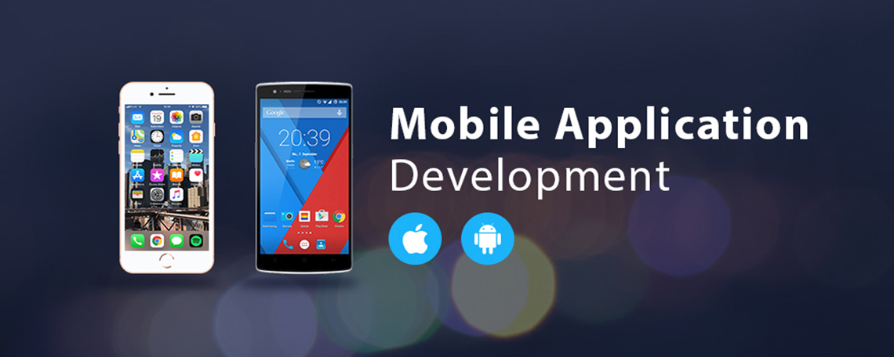

<ion-header>
  <ion-toolbar>
    <ion-title>
     Home
    </ion-title>
  </ion-toolbar>
</ion-header>

<ion-content >
      <!-- ------------Slide------------ -->
    <ion-slides pager="true" [options]="slideOpts">
        <ion-slide>
          
        </ion-slide >
        <ion-slide > 
            
        </ion-slide>
        <ion-slide >
            
        </ion-slide>
      </ion-slides>
    <!-- ------------End Slide------------ -->

  <body style="background-color:#cdf3d5;">
  </body>  

  <!-- ----------------Footer Tabs---------------- -->
  <ion-tabs>
      <ion-tab-bar slot="bottom">
        <ion-tab-button tab="browse" >
          
          <ion-label>Browse</ion-label>
          
        </ion-tab-button>
    
        <ion-tab-button tab="login" (click)="gol()">
          
          <ion-label>Log In</ion-label>
        </ion-tab-button>
        
        <ion-tab-button tab="signup" (click)="gos()">
          
            <ion-label >Sign Up</ion-label>
          </ion-tab-button>
        
      </ion-tab-bar>
    </ion-tabs>
    <!-- ----------------End Footer Tabs---------------- -->